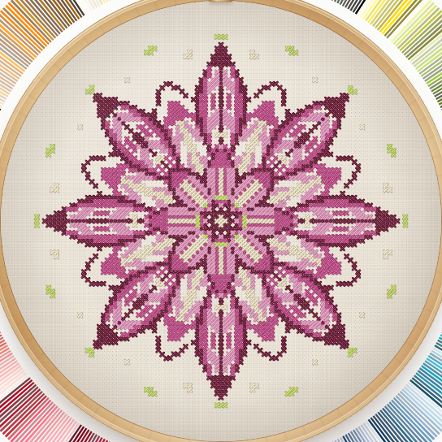
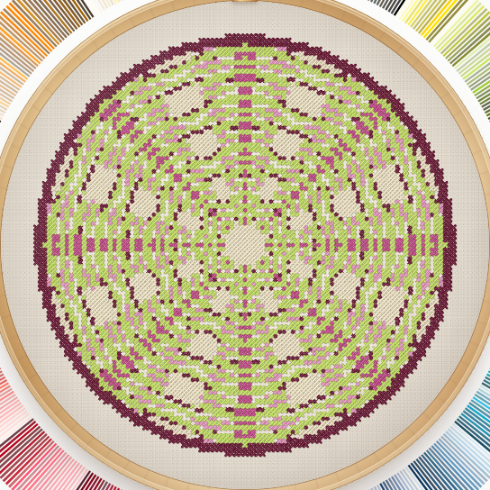
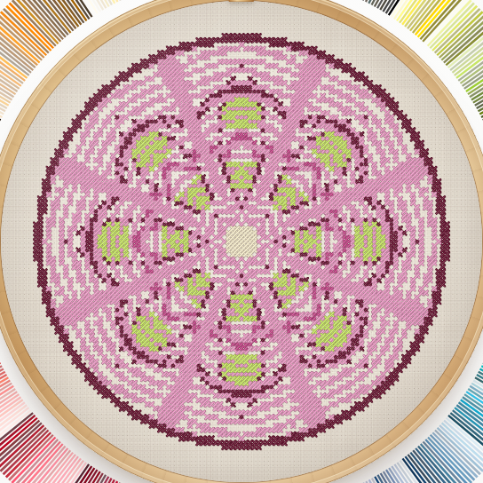
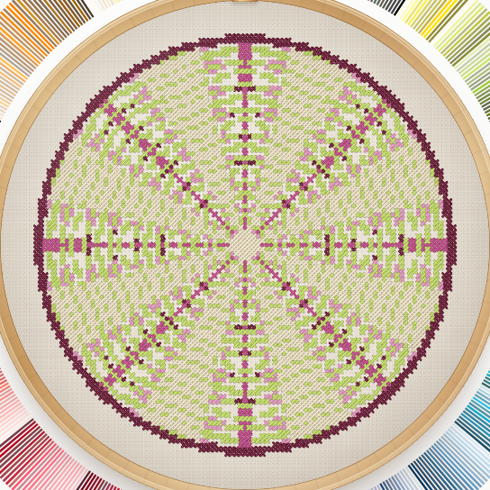
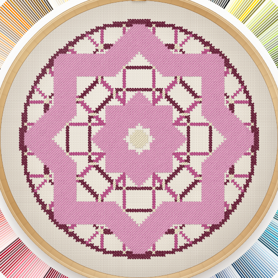
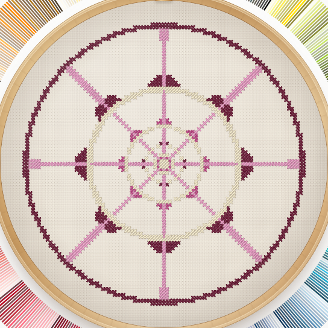

ROSACE — galerie des six géométries
Comparaison à paramètres strictement identiques : seule la valeur du curseur Géométrie change. Captures réelles du tambour, produites par le parcours navigateur Chromium — aucune image générée, aucune septième famille.
| Signature | 7 |
|---|---|
| Structure / pétales | 2 · 8 pétales |
| Tracé | 3 · courbe |
| Densité | 3 · équilibrée |
| Échelle / grille | 3 · 101 × 101 |
| Palette | DMC 902, 3607, 3608, 907, 677 |
| Tourbillon / ondulation | 1 / 1 |
| Toile | Lin naturel, aïda 14, 2 brins |

1 · Corolle
3 381 croix · empreinte 353C357F12EC80D5 · recette d'origine bit à bit préservée.

2 · Mandala
6 193 croix · anneaux concentriques, rayons et losanges.

3 · Arabesque
5 145 croix · ogives entrecroisées et festons.

4 · Kaléidoscope
5 697 croix · miroirs en coins, facettes et losanges.

5 · Entrelacs
4 621 croix · trame tissée et nœuds réguliers.

6 · Fractale
1 465 croix · étoile emboîtée à plusieurs échelles.